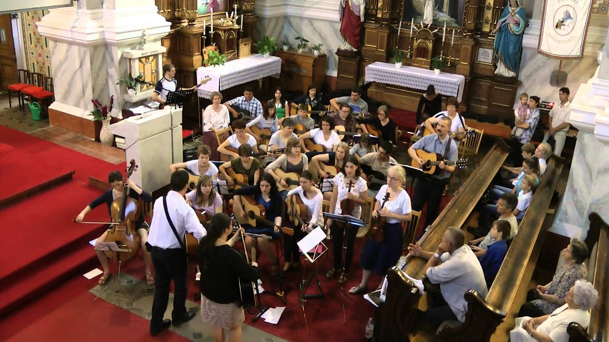
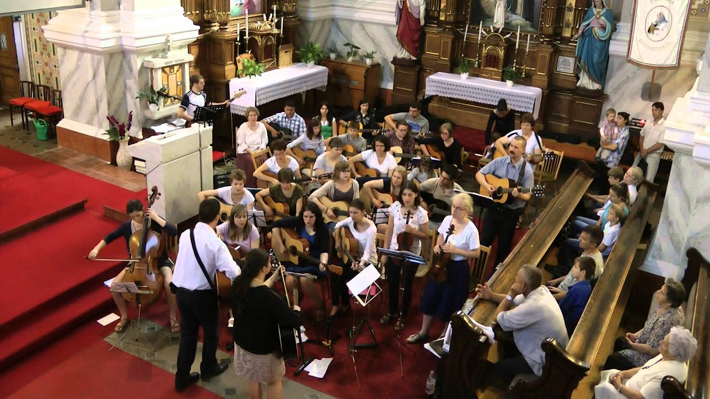

Gitaros pamokos
2020.10.29 07:39

Pradžia Pagrindai Gitara Gitarų rūšys Gitaros dalys Gitaros laikymas Gitaros derinimas Gitaros stygos Kairė ranka 9 pirmieji akordai Septakordai Barre akordai Jėgos akordai (Power Chords) Dešinė ranka Kaip braukti per stygas Braukimo schemos Arpedžio (Rinkimas) Mediatorius (brauktukas) Kaip skaityti TABus Kaip efektyviai mokytis groti Muzikos teorija Kaip išmokti gitaros natas Pradedantiesiems Greita pradžia 8 akordai per 1 minutę Pratimai Pratimas “Voras” Pratimas 4 pirštui lavinti Pratimas su mediatoriumi Lietuviškos dainos Bjelle Brolužis Hiperbolė Išgalvotas gyvenimas Ieva Narkutė – Raudoni vakarai Keistuolių teatras Meilės nėra Keistuolių teatras Žemyn upe Kernagis Kai sirpsta vyšnios Mamontovas Kai tu atversi man duris Mikutavičius Aš tikrai myliu Lietuvą Natas 1h 25 min Rebelheart Kelias pas tave Rusiškos dainos Splin Bog Ustal Nas Liubitj Postoj Parovoz Lyapis Trubetskoy Kapital Kino Kukushka Užsienietiškos dainos Animals House Of The Rising Sun James Arthur Say You Won’t Let Go Marilyn Manson Sweet Dreams Metallica One Nirvana Come As You Are Tracy Chapman Fast Car Lengvi kūriniai Su gimimo diena Žolėj sėdėjo žiogas Misty Dawn Downtown Blues Shuffle The Funky Shuffle Po mėnuliu Tyli naktis Ludwig van Beethoven Fur Elise Stilių pradmenys Džiazo pradmenys Flamenko pradmenys Bliuzo pradmenys Pažengusiems Gamos Pentatonika Bliuzinė pentatonika Mažorinė gama Minorinė gama Pratimai Legato pratimas Pirštams stiprinti Rifai RHCP stiliaus rifas Stiliai Bliuzas Cold Comfort Džiazas The Girl From Ipanema Fingerstyle The Beatles Julia Joan Osborne One Of Us Klasika F. Carulli Andantino F. Tarrega Etiudas Lietuviškos dainos Biplan Labas rytas Foje Atsimenu tai Foje Kitoks pasaulis Gytis Paškevičius Dalužė Gytis Paškevičius Draugams Hiperbolė Pamiršk mane Requiem Aš nupirksiu tau namą Virgis Stakėnas Kelelis tolimas Užsienietiškos dainos Evanescence Heart Shaped Box Limp Bizkit Behind Blue Eyes Nickelback Far Away Passenger Let Her Go Pink Floyd Is There Anybody Red Hot Chili Peppers Snow The Beatles Yesterday Nuorodos Gitaros derinimas TABų svetainės Akordų svetainės Metronomas Pritariantieji takeliai Kaip išsirinkti gitarą Klausos lavinimas Muzikiniai filmai SPECIALŪS PASIŪLYMAI 7 nemokamos gitaros pamokos Gitara per 1 naktį Prenumeruoti naujienas Kontaktai Apie mane Partneriai Prisijungti Pradžia
Gitaros akordai
A majorNaujausi straipsniai:
Stygų gesinimas delnu (Palm muting) 2017-11-01 Kaip ten yra su B ir H akordais? 2017-07-01 5 patarimai norintiems parduoti gitarą 2017-04-07 Gitaros pamokų e-parduotuvė 2016-07-19 Kuo skiriasi akustinė gitara nuo klasikinės 2016-06-09 Grupės “Jam Jam” albumas “Ir viskas bus kitaip” 2016-02-08 Puodelio daina (Cup Song) 2015-11-09 Kaip rasti dainų akordus 2015-10-25 Gitaristo anglų-lietuvių kalbų žodynėlis 2015-09-04 Kokia raidė kokią natą atitinka 2015-08-28 Juokai apie gitaristus 2015-06-07 Kodėl man neskamba akordai? 2015-04-19 Kokią lietuvišką dainą norėtum išmokti? 2015-01-27 Merginoms sunku atsilaikyti prieš gitarą 2015-01-25 Gitaros pamokos Vilniuje 2014-09-05 Kapodasteris 2014-08-04 Kaip muzikos grojimas veikia smegenis 2014-07-23 Geriausi pasaulio gitaristai Joe Satriani 2014-06-22 Gitaristo nagų ilgis 2014-06-22GuitarPro 7
Gitara per 1 naktį
Apie muziką:
"Garsai turi galią. Jie veikia mūsų kūno vibracijas, gali keisti ląstelėse glūdinčią informaciją ir taip gydyti."
"Muzika nuplauna kasdieninio gyvenimo dulkes nuo sielos."
"Muzika – universali žmonijos kalba."
"Kur baigiasi žodžiai – prasideda muzika."
Nori įsigyti gitarą?
Pradžia
7 NEMOKAMOS GITAROS VIDEO PAMOKOS
Registruokis ir per savaitę el. paštu gausi 7 NEMOKAMAS video pamokas.
Jeigu tu :
Dar visiškai nemoki groti gitara Nežinai nuo ko pradėti Nemoki nei vieno akordo Abejoji ar gerai brauki per stygas Nori greičiausiu būdu išmokti keletą lengvų dainųUžsisakyti
GITARA PER 1 NAKTĮ
Skaityti toliau
SUSIDERINK GITARĄ
Spausk ant raidės ir tau pradės groti įrašytą teisingą garsą. Pagal jį tu gali iš klausos susiderinti savo gitaros stygą. Po to spausk kitą raidę ir derink kitą stygą.
E A D G B E
Guitar Tuner from GTDB gtdb.org
Storiausia (6-oji) styga yra kairiajame krašte. Norint, kad garsas nutiltų, reikia dar kartą paspausti tą pačią raidę. Daugiau apie gitaros derinimą skaityk čia .
TRENIRUOKIS GROTI RITMIŠKAI
METRONOMAS
UŽSISAKYK NORIMOS DAINOS VIDEO PAMOKĄ
Radai dainos akordus internete? Bet skamba ne taip? Neaišku nei kaip groti, nei kokį braukimą naudoti ir pan.? Galiu pagelbėti. Užsisakyk norimos dainos video pamoką.
Kaina 35 eurai
Kaip užsisakyti? Parašyk man el. paštu: info@gitarospamokos.lt
UŽSISAKYK NORIMOS DAINOS AKORDUS, BRAUKIMO SCHEMAS, ŽODŽIUS IR PATARIMUS KAIP GROTI
Skubiai reikia išmokti dainą? Bet velniškai nėra laiko nei kada ieškoti akordų, nei kokį braukimą naudoti? Akordų internete nėra arba jie neteisingi? Užsisakyk norimos dainos akordus, braukimo schemas, žodžius ir patarimus kaip groti.
Kaina 7 eurai
Kaip užsisakyti? Parašyk man el. paštu: info@gitarospamokos.lt
Jeigu nori sužinoti naujausią Gitaros Pamokos .lt informaciją ir ypatingus pasiūlymus:
Pagrindai Pradedantiesiems Pažengusiems SPECIALŪS PASIŪLYMAI Copyright © GitarosPamokos.lt 2014-2020. Audrius Juodzevičius. Kontaktinis tel.: +370-676-38505, el.paštas: info@gitarospamokos.lt
- Gitaros ir bosai | Styginiai instrumentai | Muzikos faktorius
- Pradedantiesiems – Gitaros Pamokos
- Gitaros derinimas :: 6stygos.webnode.com
- Gitaros - Midiaudio
- Gitaros - ATTRADEMUSIC.LT
- Gitaros studija "Dream On"-Individualios gitaros pamokos ...
- Gitaros derintuvas - GROJAM
- Gitaros - GROJAM
- Elektrinės gitaros | Gitaros ir bosai | Styginiai ...
- Gitaros - Milgreta
- Gitaros ir bosai | Styginiai instrumentai | Muzikos faktorius
Kokybiškos akustinės, klasikinės, bosinės, elektrinės ir kitos gitaros gera kaina. Platus gitarų komplektų ir priedų pasirinkimas. Kokybės garantija. Greitas pristatymas.
- Pradedantiesiems – Gitaros Pamokos
Populiariausi dainų akordai (pagal kalbą) Angliškų dainų gitaros akordai. TOP 20 Angliškų dainų
- Gitaros derinimas :: 6stygos.webnode.com
Prastesnės kokybės gitaros laikomos nepalankiomis sąlygomis (svyruojanti oro temperatūra ir oro drėgmė) išsiderina net nekliudomos per vieną, dvi dienas. Gitara gana greitai išsiderina, jei ja grojant yra atliekami patempimai (bend'inimai). Gitaros derinimo būdai. Aš išskirčiau du gitaros derinimo būdus:
- Gitaros - Midiaudio
Muzikos instrumentai ir muzikos prekės Tamsta internetinėje parduotuvėje. Gitaros, būgnai, klavišiniai, pučiamieji, styginiai, pro audio ir kita.
- Gitaros - ATTRADEMUSIC.LT
Gitaros video pamokos pradedantiesiems gitaristams Showing 1–16 of 36 results ...
- Gitaros studija "Dream On"-Individualios gitaros pamokos ...
Gitaros pamokų e-parduotuvė 2016-07-19 Kuo skiriasi akustinė gitara nuo klasikinės 2016-06-09 Grupės “Jam Jam” albumas “Ir viskas bus kitaip” 2016-02-08
- Gitaros derintuvas - GROJAM
individualias gitaros pamokas kaune, mokinant groti akustine, klasikine ir elektrine gitara, organizuojame nuo 2006 metŲ, tad atvykite pirmam susitikimui ir patikrinkite save bei savo galimybes iŠmokti groti gitara. „dream on“ gitaros studijoje surasime sprendimus visiems muzikos skoniams tiek suaugusiesiems, tiek vaikams nuo 10 metŲ. pamokos vedamos lietuvių ir anglų kalbomis.
- Gitaros - GROJAM
Gitaros ir bosai. Akustinės gitaros. Akustinės gitaros su pajungimu. Klasikinės gitaros. Klasikinės gitaros su pajungimu. Elektrinės gitaros. 6 stygų elektrinės gitaros . 7 stygų elektrinės gitaros . Bosinės gitaros. 4 stygų bosinės gitaros
- Elektrinės gitaros | Gitaros ir bosai | Styginiai ...
Gitaros derintuvai Jums už geras kainas. Išsirinkite sau tinkamą derintuvą!
- Gitaros - Milgreta
Akustinės gitaros kairiarankiams Siekiant pagerinti naršymo kokybę, mes naudojame slapukus šioje svetainėje statistikos ir rinkodaros tikslais. Naršydami toliau ar spustelėdami mygtuką "Sutinku", jūs patvirtinate, kad sutinkate su slapuko įrašu.
Kokybiškos akustinės, klasikinės, bosinės, elektrinės ir kitos gitaros gera kaina. Platus gitarų komplektų ir priedų pasirinkimas. Kokybės garantija. Greitas pristatymas.
Populiariausi dainų akordai (pagal kalbą) Angliškų dainų gitaros akordai. TOP 20 Angliškų dainų
Prastesnės kokybės gitaros laikomos nepalankiomis sąlygomis (svyruojanti oro temperatūra ir oro drėgmė) išsiderina net nekliudomos per vieną, dvi dienas. Gitara gana greitai išsiderina, jei ja grojant yra atliekami patempimai (bend'inimai). Gitaros derinimo būdai. Aš išskirčiau du gitaros derinimo būdus:
Muzikos instrumentai ir muzikos prekės Tamsta internetinėje parduotuvėje. Gitaros, būgnai, klavišiniai, pučiamieji, styginiai, pro audio ir kita.
Gitaros video pamokos pradedantiesiems gitaristams Showing 1–16 of 36 results ...
Gitaros pamokų e-parduotuvė 2016-07-19 Kuo skiriasi akustinė gitara nuo klasikinės 2016-06-09 Grupės “Jam Jam” albumas “Ir viskas bus kitaip” 2016-02-08
individualias gitaros pamokas kaune, mokinant groti akustine, klasikine ir elektrine gitara, organizuojame nuo 2006 metŲ, tad atvykite pirmam susitikimui ir patikrinkite save bei savo galimybes iŠmokti groti gitara. „dream on“ gitaros studijoje surasime sprendimus visiems muzikos skoniams tiek suaugusiesiems, tiek vaikams nuo 10 metŲ. pamokos vedamos lietuvių ir anglų kalbomis.
Gitaros ir bosai. Akustinės gitaros. Akustinės gitaros su pajungimu. Klasikinės gitaros. Klasikinės gitaros su pajungimu. Elektrinės gitaros. 6 stygų elektrinės gitaros . 7 stygų elektrinės gitaros . Bosinės gitaros. 4 stygų bosinės gitaros
Gitaros derintuvai Jums už geras kainas. Išsirinkite sau tinkamą derintuvą!
Akustinės gitaros kairiarankiams Siekiant pagerinti naršymo kokybę, mes naudojame slapukus šioje svetainėje statistikos ir rinkodaros tikslais. Naršydami toliau ar spustelėdami mygtuką "Sutinku", jūs patvirtinate, kad sutinkate su slapuko įrašu.
 
